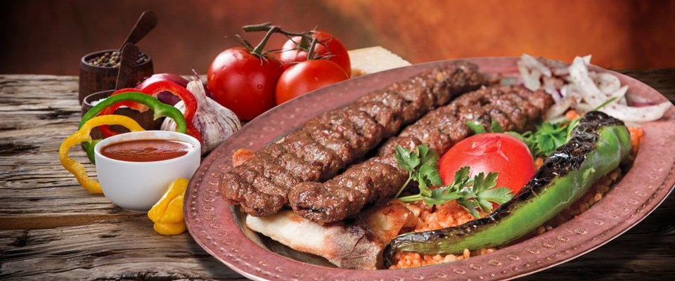
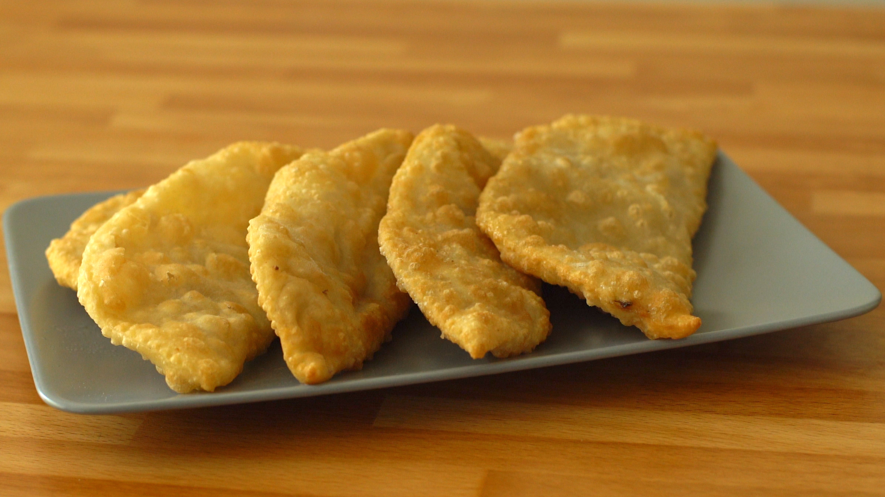
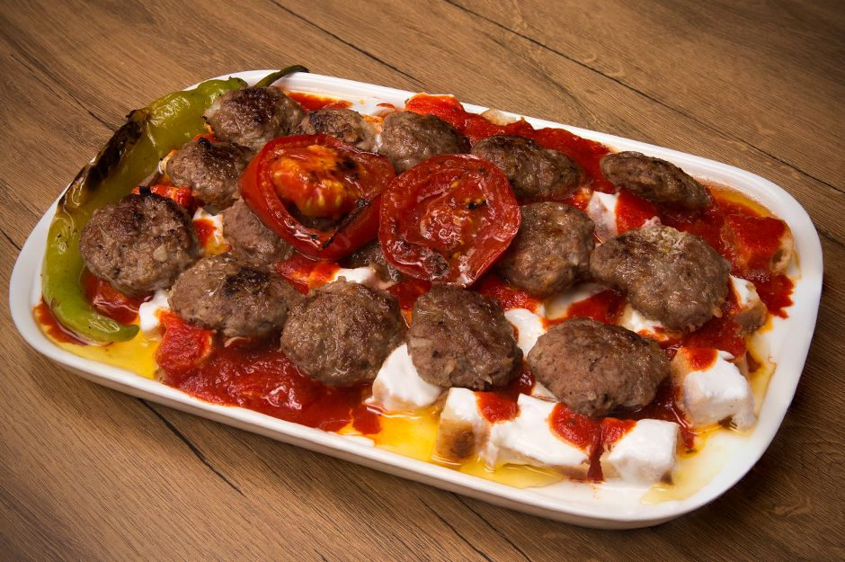
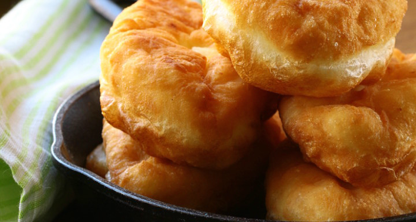
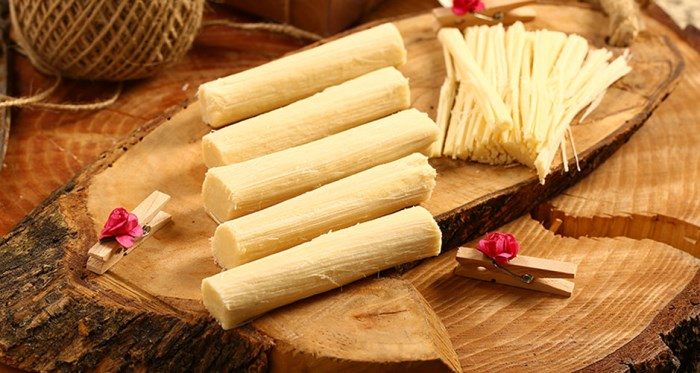

| Home | Local Dishes | Historical Places | Useful Links | About Me | Contact Me | Registration |


Eskişehir is one of the first flavors that comes to mind when it comes to regional dishes. It means "delicious pie" in Kipchak dialect. It is generally called "Çiğbörek", but it is actually "Çibörek." After filling the mixture with onion, mince and spice mixture, the dough is closed as a half month. It is served fried in hot oil. According to the restaurant, it is served as fatty or low fat. There are dozens of restaurants in the city where you can enjoy your cup of tea. Eskisehir Çibörek House opposite the Parrot Çibörek House and Eti Archeology Museum in the bazaar is one of the most famous restaurants.
Balaban köfte which is one of the most famous local Eskişehir meals; square shaped pavilas are prepared with the puddings of the köfteler which is cooked on the grill after the puddle is dipped into the bone juice and the sauce, yoghurt and butter are circulated. The most famous restaurant in the bazaar is Abdülselam Köftesici. At the back of Taşbaşı Çarşısı, you are showing your sissy to whom the köfteci is located in a business center. Apart from that, balaban meatballs are located on the menu of many restaurants. |
 |
|  |
It is a tradition that is unique to Eskişehir region and it is a tradition that is cooked in the days of eve and kandil and distributed to the neighbors and strengthens the neighborhood relations. Put yeast or ground meat in the pastry called boiler, boiled in a lot of oil is made by frying. |

Met halva seen as a symbol of local Eskişehir meals; it is a kind of sweet. It is made using flour, sugar, lemon, oil and water, and it is prepared 6 cm long, 2-3 cm wide and cut horizontally. Since it is very difficult to keep the consistency of Met steel and this work requires skill; it is beneficial to take this helvay from well-known places of the city to catch the best taste. The most famous helvacars in the bazaar; Believe it, Met Helva is Eris Helva. Met You can find the Helva in many shops. But try to get it from only the halvah shops. Met Helva is also a beautiful souvenir gift.